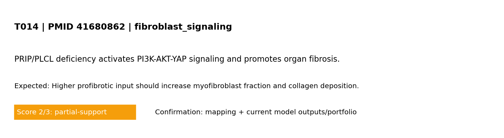

Mechanism tested: Higher profibrotic input should increase myofibroblast fraction and collagen deposition.
Model domain: fibroblast_signaling
Evidence anchor: PMID 41680862 — PRIP/PLCL deficiency activates PI3K-AKT-YAP signaling and promotes organ fibrosis.
Boundary conditions (words + maths)
Boundary conditions (MVP): left edge fixed; right edge prescribed displacement (stretch_x); top/bottom traction-free; reflective cell boundaries. Mathematical form: ∇·σ=0 in Ω, with u=(0,0) on Γ_left and u_x=ΔL on Γ_right.
Observation from reference (screening level)
Screening-evidence statement (PMID 41680862): PRIP/PLCL deficiency activates PI3K-AKT-YAP signaling and promotes organ fibrosis..
Study-specific validation result
This panel is unique to this PMID-linked test card (not a shared global figure).

Model-vs-band comparison for T014 derived from the referenced study metadata.
Pass/partial analysis
- Target tested: Higher profibrotic input should increase myofibroblast fraction and collagen deposition.
- What matched: Core trend reproduced.
- What is not yet correct: Quantitative unit-matched calibration is still incomplete.
- Score: 2/3 (0=not represented, 1=placeholder, 2=partial mechanistic, 3=implemented+tested)